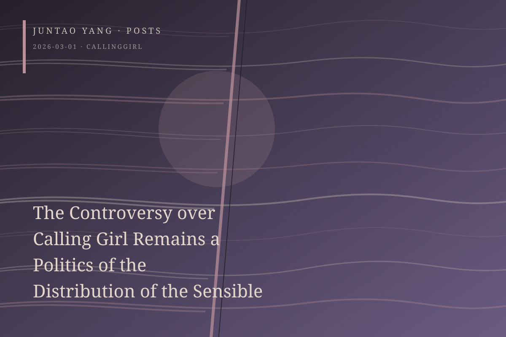

<content>
If politics is grounded not in the struggle for power but in what can count as visible, sensible, and sayable, then the first step in any representational politics of the demeaned is to secure representation that is adequate, equitable, and true. This is the force of realism. The early project of socialist realism inherited this strategy and power, although it eventually developed into a doctrine of “essential truth” that required compilation and editorial arrangement. Yet there is an irony: those who control the power of representation are often the same people who issue its prohibitions.
The discourse of resistance surrounding Calling Girl—which I have not watched ☺️—should be understood within this particular politics of representing suffering. Some forms of suffering are monumentalized with the authorization of the powerful; others have not yet been permitted to be touched. The unequal distribution of representation is the proper context of the discussion.
This explains why voices of complaint seem to be claiming two sharply different representational rights at once. On one side, they demand the right to recover enjoyment within official suffering that has been institutionalized and monumentalized; the shutdown of Baozou Big News offers one relevant example. On the other, they refuse the premature enjoyment of a suffering that remains unrecognized and repressed—and therefore unofficial. Most objections to Calling Girl belong to this latter position. We do not need a new model of trauma-attachment to explain the dispute. It is another old problem organized around power.
To be fair, artistic representations of exam-oriented education are generally too light. They deliberately ignore pain, unreasonable policy, pressure produced by involution, and destructive competition. Campus films about the wounds of youth tend to scratch around the injury through lost love, abortion, or betrayal without touching its basis: meaningless pressure and the imbalance of micropolitical power. Experiences of suffering that have not been authorized or recognized are denied qualification for entry into the field of representation. We know the nature of the prohibition. It is enforced through what I call a “dictatorship of happiness.” The ban on deconstructive enjoyment of official suffering and the ban on serious representation of unofficial suffering both serve the same affective governance. Emotional action has already been choreographed as order.
The positive, the uplifting, and the striving—the lofty, glorious, and exemplary figures of our age—provide the basic criteria of permissible representation. Meanwhile, forms of suffering that support the legitimacy of rule, which are first of all real sufferings, are repeatedly granted authoritative status and monumentalized. What people confront is not the question of how suffering and trauma ought to be represented. It is the question of which suffering and trauma may be represented at all.
This, once again, is a political problem of representational inequality.
</content>
March 1, 2026
The Controversy over Calling Girl Remains a Politics of the Distribution of the Sensible
The dispute over Calling Girl concerns less the proper representation of trauma than the unequal political distribution of which suffering may become visible at all.
